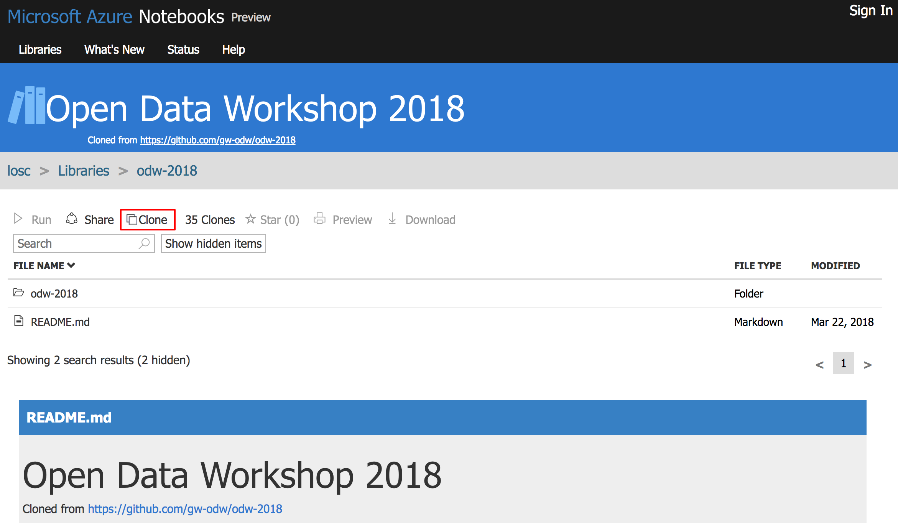
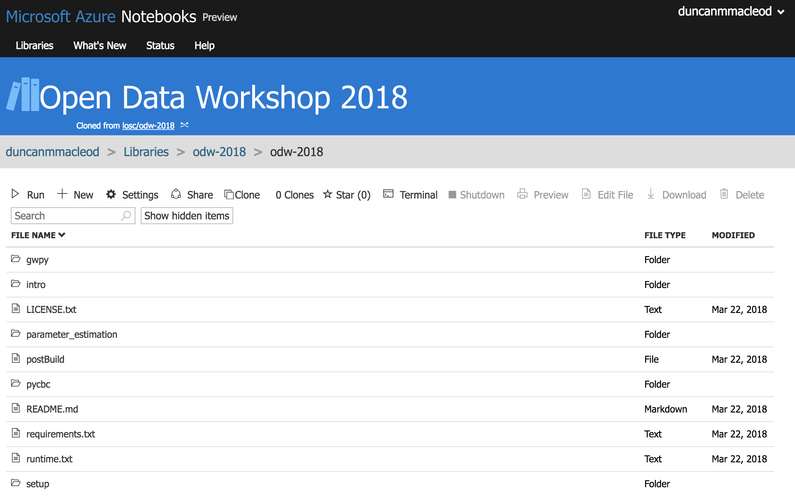
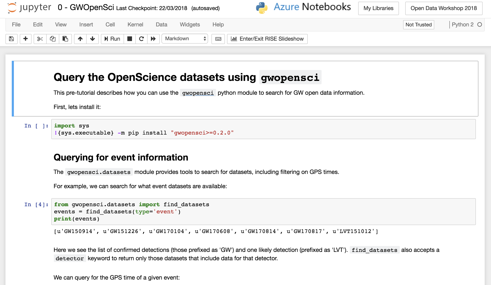

This page serves as a cover page for the Open Data Workshop, presented as part of the Colliding stars and black holes event at Cardiff University.
This workshop extends the extensive material prepared for the LIGO Open Data Workshop, held at the California Institute of Technology.
All of the material for that workshop is freely available under the MIT License.
There are 4 options for getting access to the software described on the Setup page. However, if you haven’t already set things up, I recommend the easiest solution: use Microsoft Azure:
go to https://notebooks.azure.com/losc/libraries/odw-2018, if you don’t have an account, you will need to create one,
click the Clone button to create a copy of the notebooks on your account:
click on odw-2018 to open the folder containing the materials
open one of the notebooks from your own account,
The schedule allows for 2 one-hour sessions, which is not enough to visit each of the notebooks from the original workshop in detail, so I suggest the following subset of the material:
gwpy/0 - GWOpenSci.ipynbgwpy/2b - Signal processing with GWpy.ipynbpycbc/1_CatalogData.ipynbpycbc/3_WaveformMatchedFilter.ipynbparameter_estimation/Calculating a Posterior Probability Density Function.ipynb